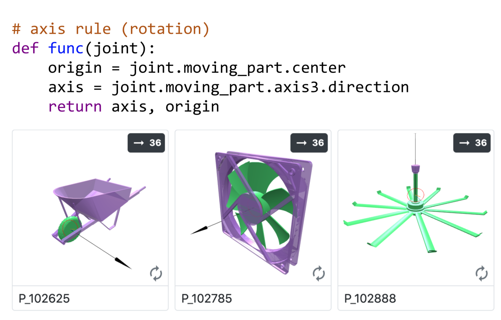

Motion Annotation Programs A Scalable Approach to Annotating Kinematic Articulations in Large 3D Shape Collections
International Conference on 3D Vision (3DV) 2020

Abstract
3D models of real-world objects are essential for many applications, including the creation of virtual environments for AI training. To mimic real-world objects in these applications, objects must be annotated with their kinematic mobilities. Annotating kinematic motions is time-consuming, and it is not well-suited to typical crowdsourcing workflows due to the significant domain expertise required. In this paper, we present a system that helps individual expert users rapidly annotate kinematic motions in large 3D shape collections. The organizing concept of our system is motion annotation programs: simple, re-usable procedural rules that generate motion for a given input shape. Our interactive system allows users to author these rules and quickly apply them to collections of functionally-related objects. Using our system, an expert annotated over 1000 joints in under 3 hours. In a user study, participants with no prior experience with our system were able to annotate motions 1.5x faster than with a baseline manual annotation tool.
Video
Citation
@inproceedings{Xu:2020:3DV,
author = {Xianghao Xu and David Charatan and Sonia Raychaudhuri and Hanxiao Jiang and Mae Heitmann and Vladimir Kim and Siddhartha Chaudhuri and Manolis Savva and Angel X. Chang and Daniel Ritchie},
title = {Motion Annotation Programs: A Scalable Approach to Annotating Kinematic Articulations in Large 3D Shape Collections},
booktitle = {International Conference on 3D Vision (3DV)},
year = {2020}
}Acknowledgements
We thank the anonymous reviewers for their helpful suggestions; we also thank the participants in our user study for volunteering their time. Michael Cosgrove, Grishka Barboy, and Hameed Abdul-Rashid helped with the development of an earlier version of our system. Angel X. Chang is supported by the Canada CIFAR AI Chair program. Manolis Savva is supported by an NSERC Discovery Grant.